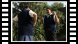

Learning experience 3, Activity 2: Hei tama tū tama
Intended outcome(s)
The students could:
- participate in a wide range of ngā mahi a te rēhia (games and pastimes) activities and identify the factors that made the experience enjoyable (HPE 1 B2)
- apply rules in hand games and demonstrate safe and fair play practices (HPE 2 B4)
- identify and compare ways that playing games competitively can impact on friendships (HPE 2 C1)
Suggested approach
Hei Tama Tū Tama, like many early games, was designed to encourage mental dexterity. Even though the winning was important, it was the way in which competitors won that was the focus. The cheeky cajoling, the smile and grimace to put your opponent off were all part of the game. The pedagogy is ako, in which games are always supportive.
This game is played using the upper body, arms, and hands, ensuring a balanced position.
Positions
- Hands on hips.
- Both forearms raised, fists clenched, and elbows to the side.
- Right forearm raised with clenched fist, left hand on hip.
- Left forearm raised with clenched fist, right hand on hip.
Rules
- The defender begins the game by calling "Hei tama tū tama" and places their hands in one of the four positions described above.
- The challenger replies with "Hei tama tū tama" and does a different action.
- When one player catches the other doing the same action, that player calls "Hei tama tū tama rā!" and scores a point.
- The winner of the point then re-starts the set, saying "Tahi. Hei tama tū tama", and play continues until a player is caught out again.
- Each time a player scores a point, they re-start the set by saying the number of points they now have followed by "Hei tama tū tama."
- The game continues until one player reaches ten points – this completes the set.
|
Description required for Hei tama tū tama video clip. |
|
|  | |
| Clip duration: 0:43 | |
| Select the viewing option that best suits the speed of your Internet connection: | |
| Download | 28Kps (audio) | 56Kps | 128Kps | 256Kps |
| If you have a slow, or dial-up, connection, select the 56Kps option. | |
Level 2
The students play the game Hei Tama Tū Tama in pairs, then form teams of four and play the game as a round robin. Winners will be established within the group and the group will continue the games to determine rankings – one, two, three, or four.
The class will then split into new groups, based on their rankings of ones, twos, threes, and fours, and play the game as a round robin again. The class will decide at what stage their games will terminate, for example, a group winner, one class winner.
In their second set of groups, the students discuss and determine tactics and dynamics of the game, what it takes to win, what it takes to outsmart an opponent, how they feel when they win and/or lose.